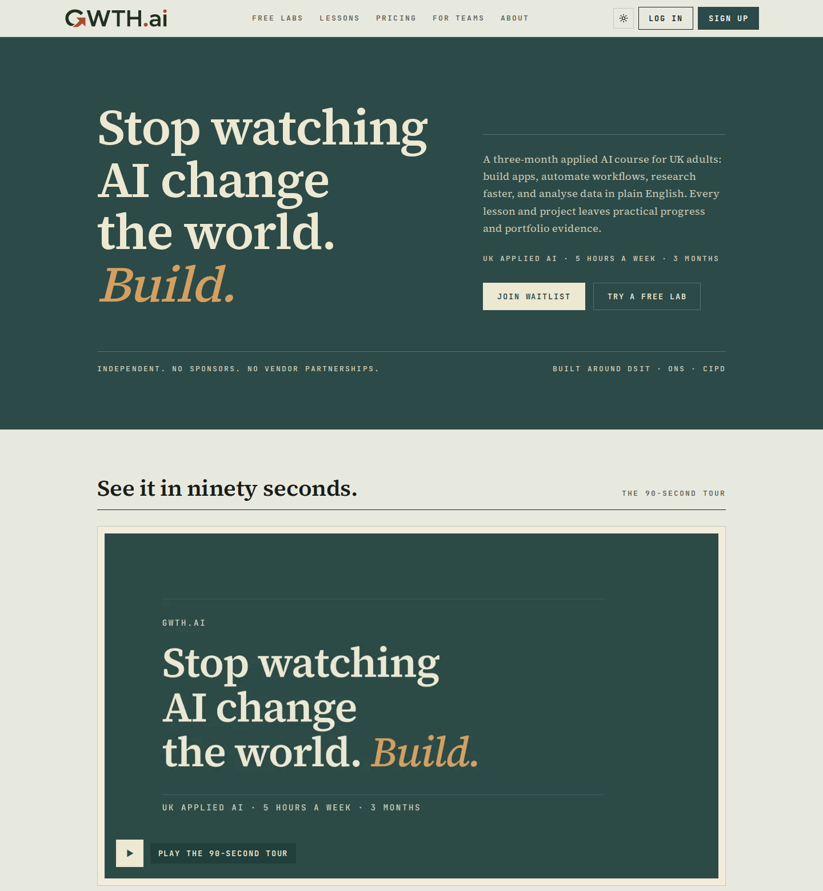
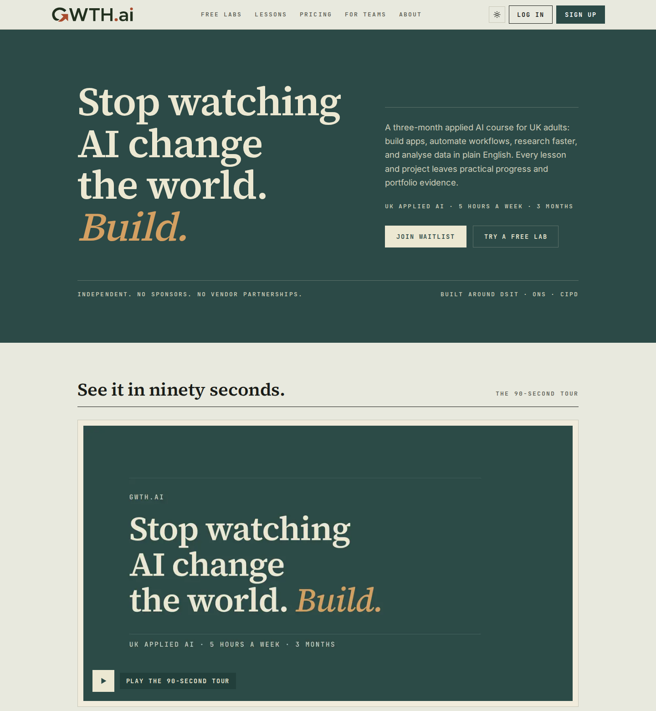
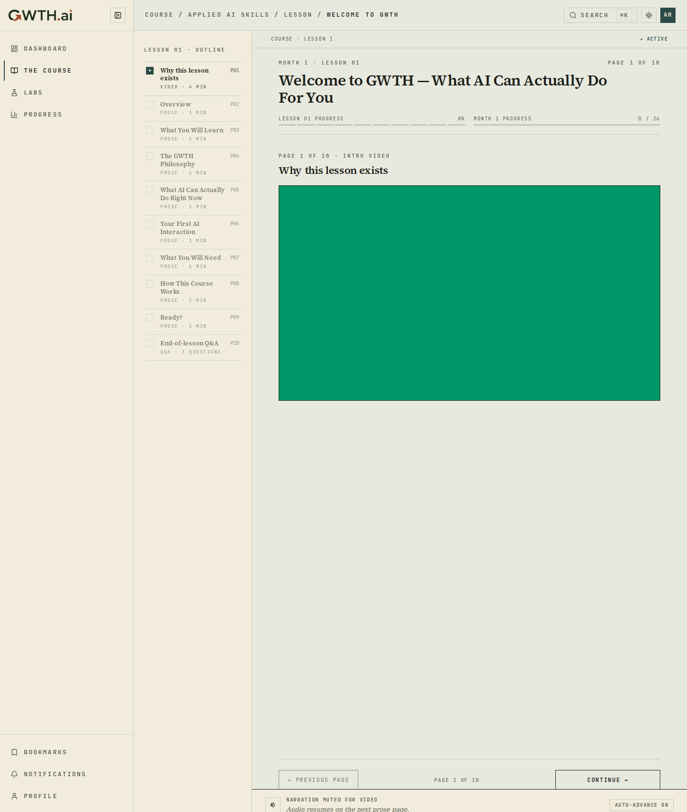
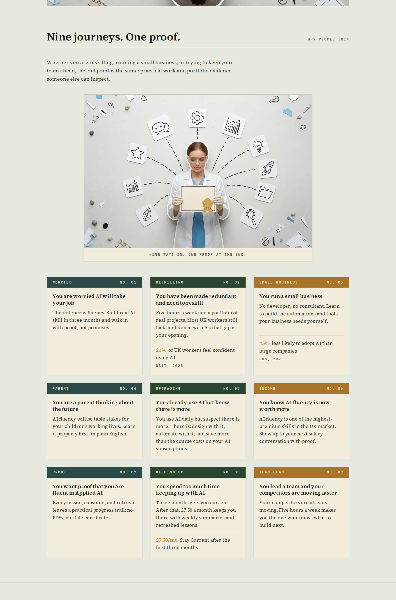
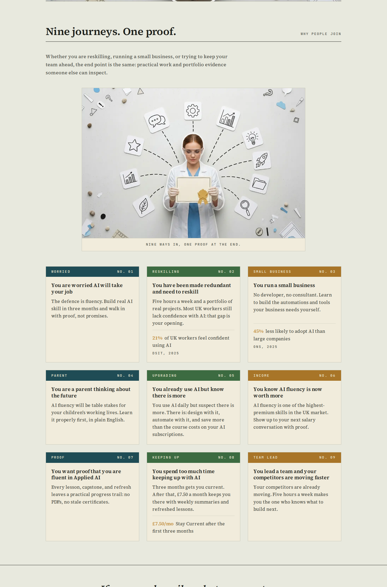
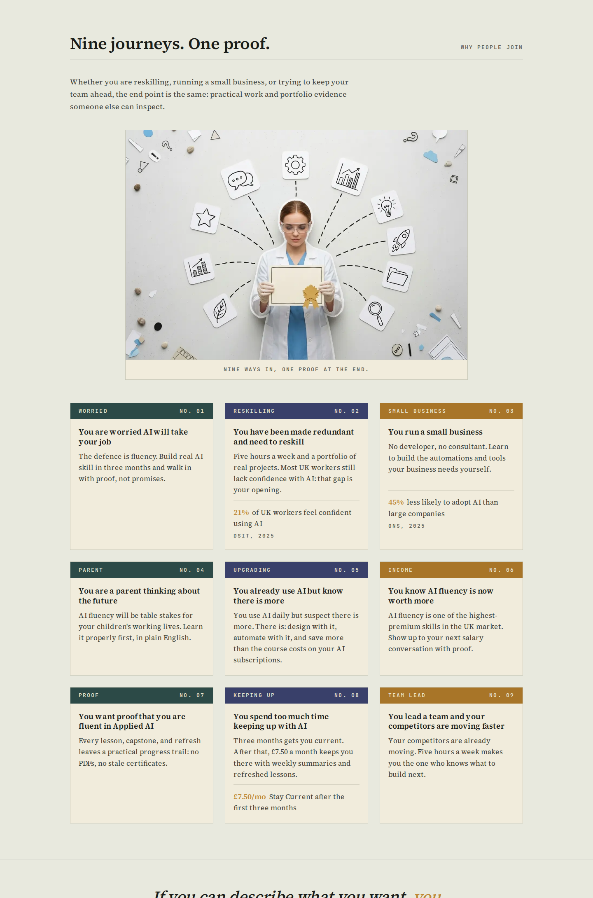

Three side-by-side questions surfaced by the W23 audit. Each shows the same real pages
(home hero + journeys grid, and the lesson viewer) with one treatment applied. Option A is always
the current live UI. Pick a direction and W24 builds it for real.
Nothing here is live. These are preview renders only: each treatment is applied as a runtime
style override on top of the current staging build, never written to source, never merged to master,
never deployed. The mechanical polish that did ship (type scale, logo consolidation, media
rhythm) is separate and is documented in the completion packet.
Body typeface
Direction Q1
The register is currently all-serif (Source Serif 4 carries display and body).
For the 50-60 reading-glasses audience, a sans body can read more easily at length, especially on the
saturated teal/near-black grounds. Headings stay serif in every option. B uses Inter; C uses Source Sans 3.
Serif bodyA · Current
Home · hero + copy

Lesson viewer
Inter bodyB
Home · hero + copy

Lesson viewer

Source Sans 3 bodyC
Home · hero + copy
Lesson viewer
Colour: separate the two dark greens
Direction Q2
The card-flavour rotation uses teal #2c4a47 and moss
#2a4530. Side by side they read as one green, so the colour-coding is lost
(worse at arm's length over a screen share). B shifts the hues apart (bluer teal, leaf-green moss);
C keeps teal and replaces moss with a clearly different indigo. Frame shows the journeys card grid.
Teal + mossA · Current
Home · journeys grid

Hue-shiftB
Home · journeys grid

Replacement accentC
Home · journeys grid

Homepage imagery density
Direction Q3
The home page runs five cutout photo/illustration plates. The audit read them as busy
and slightly off-register for a careful journal. A keeps all plates; B keeps one lead image and lets
typography carry the rest; C is image-light (typography + hairlines only). Frame shows the full home run.